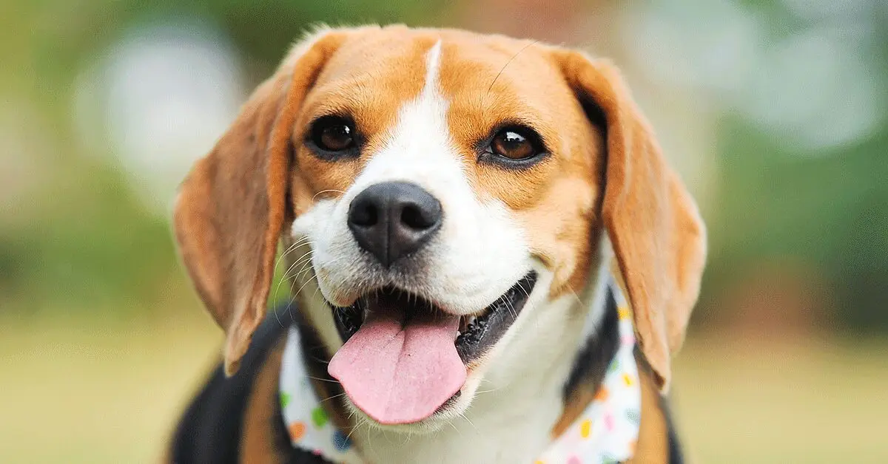
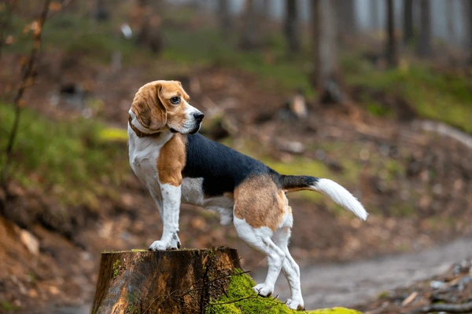
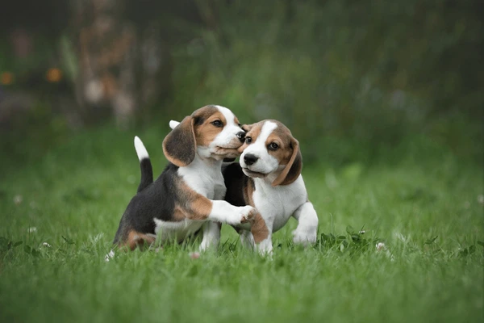

Este o rasă de câini cunoscută pentru corpul său robust și craniul lat, având urechi mari și ochi cu o expresie adorabilă. Acești câini au o blană de lungime medie, picioare puternice și seamănă cu English Foxhound, dar sunt mai compacți. Cu o talie medie și picioare puternice, Beagle sunt rapizi și rezistenți. Blana lor scurtă și lucioasă este ușor de întreținut și perfectă pentru aventuri în aer liber, cum ar fi plimbările prin pădure.
Primele informații precise despre această rasă apar în secolul al XVI-lea, evidențiind importanța Beagle-ului în activitățile de vânătoare. În acea perioadă, Beagle-ii erau foarte apreciați pentru abilitățile lor remarcabile de a urmări prada, datorită simțului olfactiv extrem de dezvoltat și naturii lor prietenoase. Acești câini pot să dispară în tufișuri atunci când simt prezența unui iepure, așa că este important să fie dresați încă de mici.Privire loială și jucăușă:
Beagle au o privire loială și sunt cunoscuți pentru personalitatea lor plină de surprize. Sunt prietenoși, activi și neînfricați.
ISTORIA:Există mai multe teorii despre originea rasei Beagle. Una dintre acestea sugerează că interesul pentru dezvoltarea acestei rase a început în Anglia, în secolul al XVI-lea. Regina Elisabeta I (1533-1603) era foarte pasionată de o varietate de talie mică a acestei rase, numită „Pocket Beagle”, și deținea o întreagă haită de astfel de câini. Chiar și astăzi, varietatea mai mică a rasei (exemplarele care nu depășesc 25 de centimetri înălțime la greabăn) poartă numele reginei. De-a lungul secolului al XVII-lea, rasa a suferit modificări prin încrucișarea cu exemplare de Terrier Englezesc.
O altă teorie afirmă că primul Beagle a apărut în Grecia Antică, în jurul secolului al V-lea î.Hr. Primele mențiuni apar în scrierile lui Xenophon, care descria utilizarea unui câine pentru vânătoarea de animale mici prin adulmecare. Istoria continuă cu romanii, care apreciau acești câini și i-au răspândit în toată Europa, în special în regiunile care fac parte acum din Regatul Unit. Se spune că William Cuceritorul ar fi adus primul câine Beagle, numit Talbot, în Anglia, în secolul al XI-lea. Primele informații precise despre această rasă apar în secolul al XVI-lea, când au fost documentate în detaliu pentru prima dată. Mai mult despre istoria rasei Beagle  ÎNGRIJIRE SI SENSIBILITATE LA BOLI:Beagle-ii au cerințe ridicate în ceea ce privește alimentația. Este important să li se ofere produse de înaltă calitate, indiferent dacă este vorba de hrană uscată sau umedă (din conservă). Năpârlesc consistent pe tot parcursul anului, cu accent în perioadele de schimbare a sezonului. Acești câini sunt robusti și rezistenți, fără probleme deosebite de sănătate, cu excepția cataractei, o afecțiune considerată ereditară la această rasă. De asemenea, pot dezvolta afecțiuni ale coloanei vertebrale, deoarece sunt atletici și plini de energie. O problemă comună pentru Beagle-i, pe măsură ce îmbătrânesc, este obezitatea SIMTUL MIROSULUI: Alături de Bloodhound și Basset Hound, Beagle-ul este una dintre rasele de câini cu cele mai dezvoltate simțuri olfactive. În anii 1950,John Paul Scott și John Fuller au inițiat un studiu asupra caracteristicilor canine. Ca parte a acestui studiu, au testat abilitățile olfactive ale diferitelor rase de câini, punând un șoarece într-un câmp și cronometrând timpul necesar fiecărei rase pentru a-l găsi. Beagle-ii au reușit să găsească șoarecele în mai puțin de un minut. Fox Terrierii au avut nevoie de 15 minute pentru a-l găsi, iar Scottish Terrierii au picat testul, nereușind să găsească șoarecele. Beagle-ul are o capacitate olfactivă mai mare la sol decât în aer, motiv pentru care nu a fost inclus în majoritatea expedițiilor montane, unde a fost înlocuit de Collie, o rasă care își folosește vederea pentru a compensa lipsurile simțului olfactiv în aer. Urechile lungi și buzele voluminoase ale Beagle-ului sunt, probabil, avantaje în perceperea mirosurilor, aducându-le mai aproape de nas. FOLOSINTA: Departamentul de Agricultură al Statelor Unite utilizează această rasă de câini pentru detectarea alimentelor din bagajele persoanelor care intră pe teritoriul țării, prin intermediul organizației numită Brigada Beagle-ilor. După ce au testat diferite rase, Beagle-ul a fost ales pentru îndeplinirea acestei sarcini datorită staturii sale relativ mici, fapt care îl face mai puțin intimidant pentru persoanele care se simt inconfortabil în preajma câinilor. De asemenea, Beagle-ul este un câine inteligent, ceea ce îl face ideal pentru acest tip de muncă. În afară de Statele Unite, Beagle-ii sunt folosiți în același scop în țări precum Noua Zeelandă, Canada, Australia, Japonia și China. Instrucția fiecărui câine durează 13 săptămâni, iar cele aproximativ 120 de exemplare își desfășoară activitatea în 88 de aeroporturi internaționale din Statele Unite. Această utilizare extinsă a Beagle-ilor pentru detectarea alimentelor în bagaje subliniază versatilitatea și eficiența lor în cadrul programelor de securitate alimentară. Beagle-ii, datorită abilităților lor olfactive excepționale, pot identifica rapid și precis alimentele care ar putea reprezenta un risc pentru sănătatea publică și agricultură. Antrenamentul riguros la care sunt supuși nu doar că îi pregătește pentru a recunoaște o varietate largă de mirosuri, dar le și consolidează abilitățile de a lucra în medii aglomerate și stresante, cum sunt aeroporturile internaționale. Acești câini, datorită dimensiunilor lor compacte și naturii lor prietenoase, pot naviga cu ușurință printre mulțimile de pasageri, asigurându-se că niciun aliment periculos nu intră în țară. Colaborarea internațională în utilizarea Beagle-ilor pentru detectarea alimentelor evidențiază importanța acestui program și eficiența metodei, demonstrând că Beagle-ul nu este doar un câine de companie, ci și un partener valoros în protecția sănătății publice și a economiei. Pentru mai multe informații despre Beagle, accesați paginile următoare: În concluzie, Beagle-ul este un companion minunat, plin de energie și afecțiune, ideal pentru familii și iubitorii de animale de companie. Cu o personalitate jucăușă și prietenoasă, acești câini sunt ușor de iubit și de îngrijit. Totuși, este important să le oferim atenția și exercițiile de care au nevoie pentru a fi fericiți și sănătoși. Înțelegerea nevoilor lor specifice, precum și investirea timpului în dresaj și socializare, vor asigura o relație armonioasă și de lungă durată cu acești prieteni patrupezi minunați. Deși sunt câini inteligenți, Beagle-ii pot fi destul de încăpățânați, ceea ce poate face antrenamentul o provocare. Cu toate acestea, cu răbdare și consecvență, pot învăța multe comenzi și trucuri. |